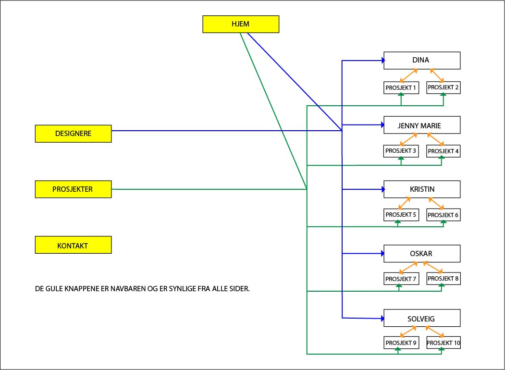

Administrative detaljer
Klient: Bernt Måsøy, Industridesigner
Direktør i PlommeDesign
Navn på nettside: Portobok
Hensikt, mål og publikum
Målet med nettsiden er å gjøre det enkelt for designere å publisere og offentliggjøre prosjekter de har gjennomført og å hjelpe arbeidsgivere med å få en innsikt i den enkelte designers arbeider. Hver enkelt designer skal kunne opprette en egen profil, men dette behandles ikke i dette prosjektet fordi det vil kreve bruken av databaser. Derfor har vi begrenset oss til fem designere med to prosjekter hver.
Siden skal være enkel og elegant slik at designere ønsker å publisere arbeidene sine der.
Primært er publikumet arbeidsgivere som ønsker innsikt i designeres arbeid og designere som legger ut prosjektene sine.
Sidestruktur
Figuren under gir et bilde av hvordan siden vil se ut arkitektuelt. Nettsidene er strukturert hierkarielt og lineært. Overordnet er det en generell hjemmeside der man kan spesifisere seg inn på alle designere eller alle prosjekter og videre spesifisere seg inn på en bestemt designer eller et bestemt prosjekt. Det er også en lineær struktur i at man fra forsiden kan nå hvert enkelt prosjekt og hver enkelt designer uten å gå innom siden med alle designere eller alle prosjekter. Det kan man gjøre fordi vi nedover forsiden har plassert en oversikt over designerne og en bildekarusell med alle prosjekter. (Det kan virke unødvendig å ha navbaren når vi bare har med 5 designere, men som nevnt i P1 er kunden interessert i at mange designere skal kunne ha profil her med mange fler enn 2 prosjekter som vi har holdt oss til i dette prosjektet).
Vi har en "landing page" (hjem), den første siden brukeren ser. Derfra kan man nå alle andre sider. Det kan man gjøre på to måter. Enten benytte seg av navbaren (de gule firkantene) eller scrolle seg nedover forsiden.
Forsiden består av 5 elementer:
- Navbar med:
- Designere. Klikker man her kommer det opp en oversikt over alle designerne. Derfra kan man gå inn på siden til en bestemt designer og derfra igjen inn på et bestemt prosjekt til den designeren.
- Prosjekter. Her kommer man inn på en side med oversikt over alle prosjektene, igjen kan man herfra gå inn på siden til et bestemt prosjekt. Inne på prosjektet vil det også være mulig å komme inn på siden til designeren av prosjektet man er inne på.
- Kontakt. Klikker man her vil det dukke opp et kontaktskjema der man kan sende melding for å nå Portobok.
- En oversikt over designerne. Herfra kan man klikke seg inn på siden til hver enkelt designer. Derfra kan man finne prosjektene til den designeren man er inne på og klikke seg inn for å se mer av prosjektene.
- En bildekarusell med ett bilde fra hvert prosjekt. Gjennom bildekarusellen er en annen måte å nå sidene til prosjektene. Ved å klikke på bildet av prosjektet kommer man inn på siden til prosjektet.
- Om oss. En liten beskrivelse av hvem Portobok er.
- Footer med kontaktinformasjon.
Grunnen til at vi har valgt denne strukturen er at det skal være enkelt og oversiktlig for brukeren. Vi vil at man skal kunne trykke seg inn på designere og prosjekter i navbaren for å finne et bestemt prosjekt eller en bestemt designer fort. Vi vil også at det skal være mulig å bare scrolle forsiden for å oppdage designere, se på prosjekter eller lese om Portobok.
Layout og utseende
Da vi utarbeidete et universelt design til denne nettsiden, var hovedfokuset brukergruppen. Ettersom det i dette er andre designere og arbeidsgivere var det viktig at siden fremstår som profesjonell og smakfull. Derfor la vi vekt på kreative og grafiske elementer på siden. I tillegg ville vi skille oss ut i fargebruken. Et av kravene vi satt var at fremkommeligheten skulle være høy og at siden skal være intuitiv. Derfor har navigasjonsbaren tre tydelige knapper som leder brukeren til tre forskjellige sider. Knappene er i store, lyse bokstaver mot en svart navigasjonsbar. Dette fanger oppmerksomheten til brukeren. I tillegg har baren en logo med initialene til Portobok, Pb. Her kan en trykke uansett hvilken side en er på for å komme tilbake til forsiden på et klikk. Logen er designet i samme stil som annen grafikk som er i innholdsdelen av nettsiden. Dette er for å skape et helhetlig tema på siden som går igjen uansett hvor du er.
Banneren tar opp stor plass på forsiden og er det første brukeren ser. Denne egenskapen forsterkes av fargevalget som er svart og grønn. Vi ønsket at framsiden skulle være minneverdig i tillegg til at brukeren med en gang skulle forstå at dette var framsiden etter å ha trykket på logoen. Fargevalget, størrelsen på både banner og teksten på banneren forsterker dette
Vi har også satt at nettsiden skal være responsiv. Dette vil være når brukeren bruker en enhet som har færre piksler enn 940px. Da vil det komme opp en hamburgermeny istedenfor en navigasjonsbar. I tillegg skal alle bildene på siden (som tidligere lå to og to i bredden) legge seg til en og en. Ingenting skjer med rammene.
Bernt Måsøy ved Plommedesign er klienten som har etterspurt nettsiden. Kravene han satt til siden var at den skulle være stilren og inspirerende. Han ønsket noen grafiske elementer og at fargebruken skulle skille seg fra andre sider for å gjøre siden troverdig og konkurransedyktig mot andre lignende sider. Måsøy mente at tross fargevalg og grafikk måtte nettsiden vare helhetlig med elementer som går igjen og intuitiv for alle brukere.
Spesifikk styling
- Fonter
- Bannerfont: Pt serif, 255pt
- Navbarfont: Helvetika Neue 40pt
- Annen tekst: Helvetika Neue 20pt
- Fargepalett
- Fonter
- Bannerskrift: Grønn #009F67
- Navbar: Samme kulørtone som bannerskrift men hvithetslik, #DEF3ED
- Annen tekst: Svart, #000000
- Hoverfarge på hamburger meny og i navbar: Grønn #009F67
- Andre elementer
- Header: Svart, #000000
- Bakgrunn: Samme kulørtone som bannerskrift men hvithetslik, #DEF3ED
- Logo: Samme kulørtone som bannerskrift men hvithetslik, #DEF3ED
- Ikoner av designere: Svart, #000000
- Bilder i innholdsdelen: vil være i svarthvit. Når man hovrer over de blir de farget og det kommer opp en grå skygge fra bunnen av bildet med hvit tekst
- Kroppsbredde: 1920 px
- Linker: Logoen, Pb, vil være en link som leder brukeren tilbake til framsiden. Navigasjonsbaren er linker som leder til prosjekter, degisnere og kontaktside.
- Navbaren sin posisjon og utseende: Navbaren vil være sammen med banneren på famrsiden. På de andre sidene vil det bare være navbare som ses. Når usen hover over noen av linkene vil det komme en grønnfirkant rundt linken i samme stil som resten av grafikken. Firkanten vil også være der når du er inne på en av sidene man finner i navbaren.
- Banner: Bakgrunnen vil være svart med Portobok skrevet i klar grønn med en serif-font
- Footer: Den vil ha de samme dimensjonene som navbaren: 252x1920px. Her vil det være kontaktinformasjon med mail, adresse og telefonnummer
- Logo: vil stå til venstre i navbaren. Den er designet for å gi et helhetlig utrykk med resten av nettsiden og andre elementer som skal være i innholdsdelen.
- Responsivitet: Nettsiden vil være responsiv når skjermstørrelsen er mindre enn 940 px. Da vil det være en enkel hamburgermeny hvor en kan trykke seg til sindene designere, prosjekter og kontakt. I tilegg vil bildene fra innholdsdelen på de forskjellige sidene legge seg en og en nedover (istedenfor to og to)
Innhold
- homepage.html
- Forsiden har som mål å fange besøkende på nettsiden sin oppmerksomhet og gi en oversikt over hva man kan finne på denne nettsiden. Den består av en banner, navbar, animert bilder av designerne, bildekarusell av prosjekter og en tekst "om portobok". Banneren
- designers.html
- Målet til siden er å gi en oversikt over designerne. Siden vil ha svart-hvitt bilder fordelt på to kolonner for å skape et ryddig uttrykk. Når man hovrer over bildet vil det bli lyst grønt og det animerte ikonet til den personen vil dekke bildet samt navnet til designeren vil komme nederst i høyre hjørnet. Dette vil gi respons på at man kan trykke på bildet. Hvert bilde vil være på 770x770 px.
- oskar.html
- Hver designer har sin egen side som skal vise frem designeren på en ryddig og profesjonell måte. Det første den viser er kontaktinformasjon, bilde av designeren og tekst om designeren, derretter en oversikt over prosjektene. Bildene av prosjektene vil være i to kolonner og i kronologisk rekkefølge etter når de ble laget. Når man tar musen over bildet vil bildet bli grønt og en tekst vil dukke opp med kort informasjon om produktet og indikere at man kan trykke på bildet.
- projects.html
- Siden til de forskjellige prosjektene er strukturert på samme måte som siden for designerne. Målet til siden er å gi en oversikt over de forskjellige prosjektene. I forskjell her er prosjektene i farget bilde. Dette fordi det viser frem prosjektene bedre og skaper nysgjerrighet og lyst til å ville trykke seg inn på et av prosjektene. Når du hovrer over et av prosjektene vil bildet bli lyst grønt og navnet på prosjektet, hvem som er designeren og årstall vil dukke opp nederst til høyre. Dette skal indikere at du kan trykke på bildet. Ved å ha likt uttrykk på sidene vil det danne et helhetlig uttrykk over siden.
- project_kristin1.html
- Målet med sidene om hvert prosjekt er å vise prosjektene på best mulig måte. Det er mer fokus på store bilder av god kvalitet enn masse tekst slik at siden blir mest mulig interessant og oversiktlig. Bildene vil være av størrelse 1500x940 px. Det er også viktig å tydelig vise hvem som er designeren. I tilleg til å nevne designeren i underteksten av overskriften vil det være et animerte bildet av designeren til høyre på siden. Man kan kommer seg videre til siden om designeren ved å trykke på ikonet. Ett og ett bilde vil vises på siden i stor størrelse med undertekst som handler om bildet. Hvor mange bilder og hvor mye tekst endrer seg fra prosjekt til prosjekt.
- contact.html
- Kontaktsiden skal hjelpe besøkende på nettsiden til å enkelt nå ut til designerne. Den vil bestå av fire bokser som det er mulig å skrive i; sender, mottaker, emne og melding. I mottakerboksen vil det være en hamburgerbar med navnene på designerne og når man hovrer over de vil de markers grønt som indikerer at man kan trykke. Trykker man på ett av navnene vil deres mail havne i mottakerboksen. Under meldingsboksen er det en sendknapp.
Minimumskriterier
Vi planlegger å oppfylle minimumskriteriene for JavaScript på denne måten:
Kristin lager en navigasjonsbar som er øverst og lik på alle sidene. Det er for å ha en enkel måte å bevege seg mellom sidene, og for å skape kontinuitet. Den skal inneholde en logo med link til forsiden, en knapp for å komme til designersiden, en knapp for å komme til prosjektsiden og en for kontaktsiden. Den skal implementeres i en tom div på hver enkelt HTML-fil.
Dina og Jenny Marie lager en bildekarusell, som skal vise fram utvalgte prosjekter. Bildekarusellen skal være stor og på forsiden for å vise fram mangfoldet av designet på nettsiden. Bildene kommer til å gå i en fast rekkefølge, og hvis du trykker på bildet kommer du rett videre til prosjektsiden for det prosjektet bildet viste.
Oskar lager et kontaktskjema. Kontaktskjemaet fylles direkte inn på nettsiden, og vil ha fire bokser som skal fylles ut. En boks for valg av hvilken designer du vil sende meldingen til, en for navnet til avsenderen, en for e-postadressen til avsenderen og en for meldingen som skal sendes. Meldingen sendes ved å klikke på en send-knapp. Send-knappen vil ikke faktisk fungere, siden vi ikke lager noe backendlogikk, men det vil dukke opp en beskjed om at meldingen er sendt.
Solveig lager en hamburgermeny, som kommer fram når nettsiden skaleres. Når nettsiden skaleres slik at det ikke lenger er plass til alle knappene på navigasjonsbaren, vil de bli erstattet med en hamburgermeny i stedet. Så navigasjonsbaren vil da kun vise logoen og hamburgermenyen. Når du da klikker på hamburgermenyen vil den vise fram de andre sidene, som designere, prosjekter og kontakt.
Vi har også planer om å lage en footer som er lik på alle sidene. Den kommer til å implementeres på samme måte som navigasjonsbaren.
Plan
Vi kommer til å bruke følgende plan og organisasjonsskjema for vårt arbeid, slik at det er lett å følge med på hva folk gjør og når de gjør det.
Organisasjonsskjema
Vi kommer til å samle alle filene i en mappe kalt «Portobok», den vil inneholde følgende filer og mapper:
- homepage.html
- designers.html
- designers/
- dina.html
- jenny_marie.html
- kristin.html
- oskar.html
- solveig.html
- projects.html
- projects/
- project_dina1.html
- project_dina2.html
- project_jennymarie1.html
- project_jennymarie2.html
- project_kristin1.html
- project_kristin2.html
- project_oskar1.html
- project_oskar2.html
- project_solveig1.html
- project_solveig2.html
- contact.html
- images/
- header_logo.png
- background_header.jpeg
- logo_pb.png
- icon_dina-png
- icon_jenny_marie.png
- icon_kristin.png
- icon_oskar.png
- icon_solveig.png
- design1.jpeg
- ...
- design30.jpeg
- illustration1.png
- ...
- illustration15.png
- scripts/
- navbar.js
- slideshow.js
- hamburger_menu.js
- contactscheme.js
- footer.js
- style.css
Arbeidsplan
| Filnavn | Beskrivelse | Ansvarlig | Frist |
|---|---|---|---|
| homepage.html | Forsiden til nettsiden | Solveig | 30.11.19 |
| designers.html | Oversikt over designere | Kristin | 30.11.19 |
| projects.html | Oversikt over prosjekter | Dina | 30.11.19 |
| dina.html | Dinas designside med oversikt over Dinas prosjekter | Jenny Marie | 30.11.19 |
| jenny_marie.html | Jenny Maries designside med oversikt over Jenny Maries prosjekter | Jenny Marie | 30.11.19 |
| kristin.html | Kristins designside med oversikt over Kristins prosjekter | Jenny Marie | 30.11.19 |
| oskar.html | Oskars designside med oversikt over Oskars prosjekter | Jenny Marie | 30.11.19 |
| solveig.html | Solveigs designside med oversikt over Solveigs prosjekter | Jenny Marie | 30.11.19 |
| project1_dina.html | Et av Dinas prosjekter | Oskar | 30.11.19 |
| project2_dina.html | Et annet av Dinas prosjekter | Oskar | 30.11.19 |
| project1_jennymarie.html | Et av Jenny Maries prosjekter | Oskar | 30.11.19 |
| project2_jennymarie.html | Et annet av Jenny Maries prosjekter | Oskar | 30.11.19 |
| project1_kristin.html | Et av Kristins prosjekter | Oskar | 30.11.19 |
| project2_kristin.html | Et annet av Kristins prosjekter | Oskar | 30.11.19 |
| project1_oskar.html | et av Oskars prosjekter | Oskar | 30.11.19 |
| project2_oskar.html | Et annet av Oskars prosjekter | Oskar | 30.11.19 |
| project1_solveig.html | Et av Solveigs prosjekter | Oskar | 30.11.19 |
| project2_solveig.html | Et annet av Solveigs prosjekter | Oskar | 30.11.19 |
| contact.html | Kontaktsiden hvor kontaktskjema fylles ut | Oskar | 30.11.19 |
| header_logo.png | Portobok i stor skrift på forsiden | Solveig | 15.11.19 |
| navbar.js | Navigasjonsbar øverst på sidene | Kristin | 30.11.19 |
| footer.js | Footer med kontaktinfo til Portobok nederst på sidene | Kristin | 30.11.19 |
| slideshow.js | Bildekarusell til forsiden med utvalgte prosjekter | Dina og Jenny Marie | 30.11.19 |
| hamburger_menu.js | Hamburgermeny som dukker opp når nettsiden skaleres mindre | Solveig | 30.11.19 |
| contact_scheme.js | Kontaktskjema som fylles ut på kontaktsiden | Oskar | 30.11.19 |
| style.css | CSS-filen inneholder all stylingen for alle sidene | Alle | 06.11.19 |
| Final controls | Dobbeltsjekker alle filene for å sikre at det ikke er noen error | Alle | 06.11.19 |